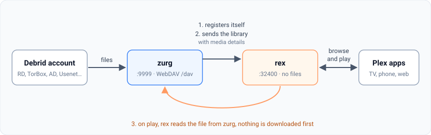
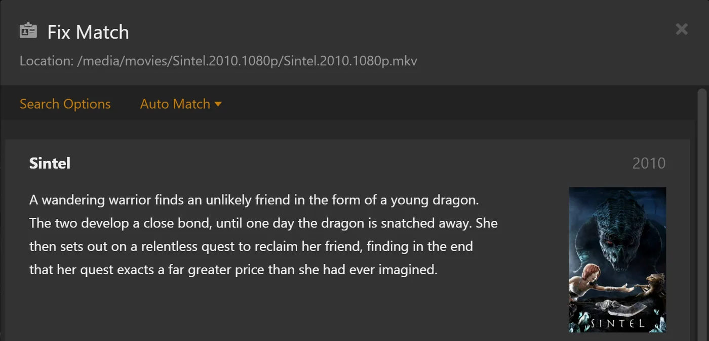

rex と zurg
rex は、ファイルを一切持たない公式 Plex アプリ向けのメディアサーバーです。公式 Plex アプリからは、普通の Plex サーバーに見えます。どのアプリからでも中身を入れられます（rex を自分のアプリで使う）。このページでは zurg と組み合わせて設定します。zurg がデバッグサービスのライブラリを rex に送り、再生するとき rex は zurg からファイルを直接ストリーミングします。先にダウンロードすることはありません。
このページでは、何もない状態から映画を再生するまでを、一歩ずつ説明します。各ステップで、何をするのか、なぜ大切なのか、次に進む前に何が見えるべきかを書いています。画面の表示が一致しない場合は、そこで止めてください。次のステップを進めても直りません。

始める前に知っておいてほしいことが 4 つあります。
- zurg は、デバッグサービスと通信する部分です。 アカウントにあるものを一覧にして、ファイルを配信します。
- rex は、Plex アプリが話しかける部分です。 メディア用のファイルは持たず、ディスクも必要としません。rclone やマウントも不要です。
- zurg が rex に自分のことを知らせます。 rex のアドレスを zurg に教えれば、あとは zurg が自動でやります。zurg の情報を rex に入力する必要はありません。
- zurg と DMM が、各ファイルが何かを判断し、Plex がそれを説明します。 zurg は、各ファイルがどの映画やエピソードかを DMM に問い合わせます。rex は、rex を Plex アカウントに接続した後、Plex 自身のメタデータが付けるポスターとあらすじを使って、そのタイトルを表示します。rex がファイル名から推測することはありません。
rex は個人利用であれば無料です（PolyForm Noncommercial）。スポンサー階層はなく、ダウンロードにアカウントも要りません。このガイドで使う zurg のナイトリー版は、引き続きスポンサー向けリリースです。rex を自分のアプリで使う では、zurg なしで rex を動かせます。スマホやテレビボックスしかない場合は、zurg+rex（スマホ上で Plex サーバーを動かす構成）があり、zurg と rex を 1 台で一緒に動かせます。詳しくは Android ガイド をご覧ください。
始める前に
このページは rex nightly 2026.10.25 以降、zurg nightly 2026.10.27 以降 が必要です。
ステップ 1. zurg をインストールする
何をするか。 zurg をダウンロードして、debrid アカウントの情報を尋ね、再起動後も自動で立ち上がるサービスとして zurg を起動します。
なぜ重要か。 rex に表示されるものはすべて zurg から来ています。zurg がライブラリを見られなければ、rex も表示できません。
Windows と macOS では、Docker Desktop ではなく、下のインストーラーで zurg をインストールしてください。 rex は zurg が指定するアドレスからすべてのファイルを読み込みますが、Docker Desktop の中にある zurg には接続できません。タイトルは表示されても、何も再生できなくなります。
curl -fsSL https://raw.githubusercontent.com/debridmediamanager/zurg-site/main/public/install.sh | bash
sudo loginctl enable-linger "$USER"zurg は ~/zurg にインストールされます。2 行目のコマンドは、ログアウトしてもサービスを動かし続けます。
curl -fsSL https://raw.githubusercontent.com/debridmediamanager/zurg-site/main/public/install.sh | bashzurg は ~/zurg にインストールされます。インストーラーは macFUSE もインストールします。macOS から許可を求められた場合は、System Settings の Privacy & Security で許可してから再起動してください: macOS での zurg。
PowerShell で:
irm https://raw.githubusercontent.com/debridmediamanager/zurg-site/main/public/install.ps1 | iexzurg は $HOME\zurg（C:\Users\you\zurg）にインストールされます。インストーラーは WinFsp もインストールします。その際に管理者の承認を求められます。また、Windows にログインするたびに zurg が起動します: Windows での zurg。
インストーラーはどのサービスを使っているか尋ねます（Real-Debrid の場合は 1 と入力）。その後 API token を尋ねます。貼り付けている間、token は表示されません。
表示されるもの。 インストーラーは PASS の行が並び、最後に ==> zurg is installed in と zurg のフォルダーが表示されて終わります。その後 zurg がライブラリを読み込みます。小さいアカウントなら数秒、Real-Debrid に 1,000 件のリリースがあるアカウントならおよそ 10 分です。http://<this machine>:9999 で zurg のダッシュボードを開いてください。読み込みが終わると、Library Size にアイテム数が表示されます。
すでに zurg を使っていますか？ 次のコマンドで更新して再起動してください: cd ~/zurg && ./zurg update && ./zurg service restart（Windows の場合は cd $HOME\zurg; .\zurg.exe update; .\zurg.exe service restart）。
ステップ 2. rex をインストールする
概要。 rex を ~/rex（Windows では $HOME\rex）にダウンロードして、サービスとして起動します。後の手順に必要なものはすべて揃います。この後の手順では再起動は不要です。再起動が必要なのは、下のオプションのセクションだけです。
重要な理由。 rex は Plex アプリがつながる先です。最初に起動すると rex.db が作られ、ここにライブラリ、zurg から送られてきたもの、視聴履歴がすべて保存されます。
Linux では、代わりに Docker で zurg と rex を動かすこともできます。
mkdir -p ~/rex && cd ~/rex
TAG=$(curl -fsSL 'https://api.github.com/repos/debridmediamanager/rex/releases?per_page=1' | sed -n 's/.*"tag_name": *"\([^"]*\)".*/\1/p' | head -1)
P=$(uname -s | tr A-Z a-z)-$(uname -m | sed 's/x86_64/amd64/;s/aarch64/arm64/')
curl -fL "https://github.com/debridmediamanager/rex/releases/download/$TAG/rex-$TAG-$P.tar.gz" | tar xz --strip-components=1PowerShell で:
New-Item -ItemType Directory -Force $HOME\rex | Out-Null; cd $HOME\rex
$tag = (Invoke-RestMethod 'https://api.github.com/repos/debridmediamanager/rex/releases?per_page=1')[0].tag_name
curl.exe -fLO "https://github.com/debridmediamanager/rex/releases/download/$tag/rex-$tag-windows-amd64.zip"
tar -xf "rex-$tag-windows-amd64.zip" --strip-components=1; Remove-Item "rex-$tag-windows-amd64.zip"このコマンドは、お使いのマシン向けの rex の最新ビルドを取得します。通常はナイトリービルドです。
rex の LAN IP、つまり自宅ネットワーク上のアドレスを調べてください。Linux では hostname -I がいくつか表示します。自宅ネットワーク側のものを選び、172.17.（Docker）や 100.（Tailscale）で始まるものは選ばないでください。macOS では ipconfig getifaddr en0 で表示できます（何も出なければ en1）。Windows では ipconfig の Wi-Fi または Ethernet アダプターの下に IPv4 Address として出ます。このページでは、どこでも 192.168.1.20 と書いています。ご自身のアドレスに置き換えてください。 Plex アプリ、zurg、自分で打つコマンドは、すべてこのアドレスで rex に接続します。
Plex Media Server も同じマシンで動いていますか? 下の rex の起動コマンドの末尾に --port 32500 を付けてください。コマンドや設定で 32400 となっている箇所は、すべて 32500 に読み替えます。Windows ファイアウォールのルールも同じです。Plex はすでにポート 32400 と、アプリがサーバーを探すためのポートを使っています。rex は別のポートを使うことで、それらを Plex に任せられます。そうすると、アプリには同じマシン名のサーバーが2つ表示されます。共有されているほうが rex で、その隣に新しいアカウントの名前が出ます。rex を Plex アカウントに紐付けたら（
では、サービスとして登録しましょう。
~/.config/systemd/user/rex.service を作成します:
mkdir -p ~/.config/systemd/user
nano ~/.config/systemd/user/rex.service[Unit]
Description=rex
After=network-online.target
[Service]
WorkingDirectory=%h/rex
EnvironmentFile=-%h/rex/rex.env
ExecStart=%h/rex/rex
Restart=always
RestartSec=5
[Install]
WantedBy=default.targetsystemctl --user daemon-reload
systemctl --user enable --now rex
journalctl --user -u rex -frex の start command は ExecStart の行です。キーは ~/rex/rex.env に、1行に1つずつ NAME=value の形で書きます。変更したら systemctl --user daemon-reload && systemctl --user restart rex で rex を再起動できます。journalctl --user -u rex -f でログを確認できます。
run.sh は自分のフォルダ内で rex を起動します。LaunchAgent はログインしたときに run.sh を起動します:
cp ~/rex/examples/run.sh.example ~/rex/run.sh
mkdir -p ~/Library/LaunchAgents
cat > ~/Library/LaunchAgents/com.rex.plist <<PLIST
<?xml version="1.0" encoding="UTF-8"?>
<!DOCTYPE plist PUBLIC "-//Apple//DTD PLIST 1.0//EN" "http://www.apple.com/DTDs/PropertyList-1.0.dtd">
<plist version="1.0"><dict>
<key>Label</key><string>com.rex</string>
<key>ProgramArguments</key><array><string>/bin/bash</string><string>$HOME/rex/run.sh</string></array>
<key>RunAtLoad</key><true/><key>KeepAlive</key><true/>
<key>StandardOutPath</key><string>$HOME/rex/rex.log</string>
<key>StandardErrorPath</key><string>$HOME/rex/rex.log</string>
</dict></plist>
PLIST
launchctl load ~/Library/LaunchAgents/com.rex.plist
tail -F ~/rex/rex.logrex の start command は ~/rex/run.sh の最終行です。キーは ~/rex/rex.env に、1行に1つずつ NAME=value の形で書きます。変更したら launchctl kickstart -k gui/$(id -u)/com.rex で rex を再起動できます。tail -f ~/rex/rex.log でログを確認できます。
rex は Mac にログインしている間だけ動きます。Mac が自動で再起動する場合は、自動ログインをオンにしてください（System Settings の Users & Groups）。macOS のファイアウォールが有効なら、macOS が聞いてきたときに rex を許可してください。または、ファイアウォールの Options に ~/rex/rex を追加します。
PowerShell を管理者として開き、cd $HOME\rex で rex のフォルダに移動します。まず run.cmd を作ります。これは自分のフォルダ内で rex を起動し、ログを rex.log に書き出すファイルです。メモ帳がファイルの作成を提案してくるので、それに従ってください:
notepad run.cmd@echo off
cd /d "%~dp0"
rex.exe 2>> rex.log保存します。次に、Windows ファイアウォールで rex のポートと2つのディスカバリー用ポートを通します。そのうえで、rex を今すぐ起動し、ログインするたびに起動するようにします:
New-NetFirewallRule -DisplayName rex -Protocol TCP -LocalPort 32400
New-NetFirewallRule -DisplayName "rex discovery" -Protocol UDP -LocalPort 32410,32414
$settings = New-ScheduledTaskSettingsSet -ExecutionTimeLimit 0 -AllowStartIfOnBatteries -DontStopIfGoingOnBatteries
Register-ScheduledTask rex -Action (New-ScheduledTaskAction -Execute "$HOME\rex\run.cmd") -Trigger (New-ScheduledTaskTrigger -AtLogOn -User $env:USERNAME) -Settings $settings
Start-ScheduledTask rex; Start-Sleep 3
Get-Content rex.log -Waitrex の start command は run.cmd の rex.exe の行です。キーはその上に、1行に1つずつ set NAME=value の形で書きます。変更したら Stop-Process -Name rex; Start-Sleep 1; Start-ScheduledTask rex で rex を再起動できます。Get-Content $HOME\rex\rex.log -Wait でログを確認できます。
PowerShell で rex を手動で起動した場合は、ログはそのウィンドウにしか出ず、rex.log はできません。また、再起動後にそれを起動するタスクもありません。rex はデータベースと紐付けの情報を、起動したフォルダに保存します。そのため、別のフォルダから起動した rex は、紐付けのない新しいサーバーになります。Ctrl+C で停止し、rex のフォルダから同じフラグを付けて起動し直してください。できれば、上で設定したタスクを使うのがおすすめです。
rex は Windows にログインしている間、専用のウィンドウで動きます。そのウィンドウは開いたままにしてください。PowerShell で、このページに curl と書かれている箇所には curl.exe と入力してください。Windows PowerShell 独自の curl は別のコマンドです。
表示される内容。 最初のほうの行には、次のようなものが出ます:
INFO seeded rex.db: an empty library named yourhost, machine=...
INFO no source yet: a source registers itself once pointed at this server (PUT /rex/sources/{name}, docs/feed-api.md)
INFO claim state: unclaimed
INFO rex on http://192.168.1.20:32400 machine=... items=0 parts=proxyrex は自分をマシン名で名乗ります。Plex アプリにはその名前が表示されます。no source yet と出るのは正常です。zurg にはまだ rex のことを伝えていないためです。ログは開いたままにしておいてください。
ステップ 3. Plex アカウントに追加
Was es macht. Registriert rex bei einem Plex-Konto, so wie man einen echten Plex Media Server registrieren würde, und teilt ihn mit deinem eigenen Konto.
Warum es wichtig ist. rex holt sich den Namen, das Poster, die Zusammenfassung und die Episodennamen aller Titel aus den eigenen Metadaten von Plex, und das darf es erst, wenn es an einem Konto hängt. Titel, die zurg vor der Registrierung gesendet hat, bekommen ihre Namen, sobald sie fertig ist. Außerdem funktioniert damit Fix Match, der Hinweis „unclaimed“ verschwindet, und es ist nötig, bevor du
Nimm dafür ein neues Plex-Konto, nicht dein eigenes. rex wird nicht von Plex gemacht, und Plex könnte gegen ein Konto vorgehen, das rex registriert. Halte dein echtes Konto mit Wiedergabeverlauf, Freunden und eventuellem Plex Pass da raus: Erstelle auf plex.tv ein neues kostenloses Konto mit einer E-Mail-Adresse, die du sonst nirgends verwendest, registriere rex damit und teile rex mit deinem eigenen Konto. Dann schaust du angemeldet als du selbst, so wie du den Server eines Freundes nutzen würdest. Solange dieser Schritt nicht erledigt ist, spielt rex nichts ab.
新しいアカウントに rex を登録
- plex.tv に 新しく作ったアカウントで サインインし、plex.tv/claim を開いてコードをコピーします。コードの有効期限は約5分です。
-
rex のマシンで（Windows では
curl.exe）:curl -X POST "http://192.168.1.20:32400/myplex/claim?token=claim-xxxxxxxxxxxx" curl -s http://192.168.1.20:32400/identity
表示されるはずの内容。 2つ目のコマンドは claimed="1" と表示され、rex のフォルダに claim_state.json ができています。このファイルはバックアップしておいてください。これがないと、新しいコードでもう一度 claim する必要があります。このファイルが存在する間、rex は2回目の claim を受け付けません。
自分のアカウントと共有
- まだ新しいアカウントでサインインした状態で、app.plex.tv を開き、Settings（レンチのアイコン）、Manage Library Access、Grant Library Access の順にクリックします。
- 自分のアカウントのユーザー名またはメールアドレスを入力し、rex サーバーと、Movies と TV Shows の両方のライブラリを選んで、招待を送ります。
- サインアウトして、自分自身のアカウントでサインインし、招待を承諾します。招待はメールと app.plex.tv の両方に届きます。


表示されるもの。 自分のアカウントでサインインすると、Plex アプリの自分のサーバーの横に rex サーバーが表示され、両方のライブラリが並びます。次のステップまでは中身は空っぽです。rex での視聴履歴は自分だけのものになり、新しいアカウントの履歴とは別に保存されます。家族など他の人と共有したい場合も、同じ手順で進めてください。
ステップ 4. zurg を rex に接続する
何をするか。 zurg に rex の場所を教えます。zurg は自分を rex に紹介し、ライブラリ全体を送ります。各ファイルの映像と音声の詳細も読み取って送り、その後は変更があるたびに送信します。
なぜ重要か。 これは両者をつなぐ唯一のリンクです。rex には zurg 用の設定がありません。rex_url がないと rex は空のままです。rex_url は常に、ネットワーク上の rex の素の http:// アドレスにしてください。
zurg は同じキーで二重に起動しません。また、ダッシュボードにキーを入力すると、zurg は dmm_api_key を設定ファイルに書き込みます。DMM キーがない場合は、dmm_api_key を書かないでください。
まず、zurg の設定にどちらかの行がすでにあるか確認します:
grep -n '^rex_url:\|^dmm_api_key:' ~/zurg/config.yml行が表示されたら、そのキーはすでに設定されています。nano ~/zurg/config.yml で書き換え、下の printf からは外してください。
printf '\nrex_url: http://192.168.1.20:32400\ndmm_api_key: your_dmm_key\n' >> ~/zurg/config.yml
cd ~/zurg && ./zurg service restartnotepad $HOME\zurg\config.yml で zurg の設定を開きます。すでに rex_url: または dmm_api_key: の行がある場合は、その行を書き換えます。足りないものは末尾に追加してください:
rex_url: http://192.168.1.20:32400
dmm_api_key: your_dmm_key保存して zurg を再起動します:
cd $HOME\zurg; .\zurg.exe service restart表示されるもの。 zurg がライブラリを再読み込みすると、zurg のログ（~/zurg/logs/zurg.log、Windows では $HOME\zurg\logs\zurg.log）に DMM placed N releases と表示されます（DMM キーがない場合は Placed N releases by their names (no DMM sponsor key)）。rex のログには次のように出力されます:
INFO SOURCES zurg registered at http://192.168.1.20:9999/dav
INFO SOURCES PUT /rex/sources/zurg -> 200
INFO FEED zurg upsert: 0 created, 0 updated, 200 held, 0 unchanged, 0 rejected
INFO FEED identified "Sintel.mp4" -> movie tmdb:45745 (placed)
INFO FEED zurg upsert: 2 created, 0 updated, 0 held, 0 unchanged, 0 rejectedrex は registered at の行にあるアドレスから各ファイルを読み取るため、そのアドレスで zurg に到達できる必要があります。rex がこの行を再度出力するのは、アドレスが変わったときだけです。
held は、zurg がそのファイルの詳細をまだ読み取っていないことを意味します。zurg はライブラリの読み込みが終わるとすぐに、一度に1つのリリースずつ詳細の読み取りを始めます。シーズンパックのエピソードはまとめて届きます。DMM キーがあれば、DMM が保存している詳細から1分あたり最大約20リリースが届きます。大きなライブラリでは、読み込みが完了するまで数時間かかることがあります。各タイトルは、詳細が届くたびに rex に表示されます。後から debrid サービスのアカウントに追加したものは、zurg が読み取ると自動的に表示されます。
うまくいかない場合。
-
rex のログに何も出ていない場合: zurg がまだライブラリを読み込んでいるか、zurg が古いか（
ステップ1 のとおり更新してください）、rex_urlにタイプミスがあります。grep 'rex feed' ~/zurg/logs/zurg.log | tail -n 5で zurg 側の状況を確認できます（Windows ではSelect-String 'rex feed' $HOME\zurg\logs\zurg.log | Select-Object -Last 5）。rex feed: pushing the library to ...の行がなければ、zurg はrex_urlを読めていません。rex feed: snapshot failed, retrying in ...と出ている場合は、そのアドレスに rex が届いていません。 -
タイトルが
heldのままで、zurg がCannot probe file ...と記録する場合: debrid サービスからの最初の読み取りに失敗しています。zurg は自動で再試行します。すぐに試したい場合は、zurg のダッシュボードの Utilities にある Analyze & Tag Library（下の画面）を使ってください。
-
タイトルは届くのに
identifiedの行が出ない場合: zurg は名前で一致させられませんでした。dmm_api_keyを設定していて、そのキーがスポンサーのものでない場合、zurg はDMM refused the API key for placementと記録します。その場合、zurg は名前による一致を使い、翌日（または再起動時にすぐ）キーを再試行します。 -
タイトルは表示されるのに再生できない場合: rex は
registered atのアドレスで zurg に到達できません。問題が起きたとき のupstream failedの行で確認できます。
複数の zurg を動かしている場合（debrid サービスごとに1つずつ）は、追加の行 rex_source: rd、rex_source: tb などで、それぞれに個別の名前を付けてください。同じライブラリに反映されます。
DMM がファイルを配置する理由
zurgが配置できないファイルは未マッチのままになります。ファイル名がそのままタイトルになっている映画や、リリース名がそのままタイトルになっている番組のエピソードで、ファイルの順番で番号が振られたものです。DMMキーを設定していると、zurgは1日後にもう一度DMMに問い合わせます。また、PlexアプリでFix Matchを使って自分で直すこともできます。その際は、rexを所有している新しいアカウントでサインインしてください（rexは共有先のアカウントでは拒否されます）。Fix Matchで直したタイトルは、設定したままの状態が維持されます。


zurgのダッシュボードには、各リリースに対して何をしたかが表示されます。Torrent Managerでリリースを開き、Placementを確認してください。Place againを押すと、もう一度DMMに問い合わせます。External IDにIMDb IDを入力すると、そのIDをもとに配置されます。

ステップ 5. 何か視聴してみる
何をするか。 Plex サーバーを開くのと同じ方法で、Plex アプリから rex を開きます。
なぜ大事か。 ここがセットアップ全体のポイントです。最後のつながりも確認できます。映画を見ている間に、rex が zurg からファイルを読み込んでいるということです。
同じ自宅ネットワークにつないだ状態で、スマホ、テレビ、パソコンの Plex アプリ（Web ブラウザではなく）を開いてください。rex はマシン名の下に Movies と TV Shows と一緒に表示されます。映画を選んで再生を押してください。

自宅では他に必要なものはありません。Plex アプリは Plex 独自のローカル検出機能で rex を見つけ、ネットワーク経由で接続します。そのためには、デバイスが rex と同じネットワーク上にある必要があります（ゲスト Wi-Fi や別の VLAN ではだめです）。検出は UDP ポート 32410 と 32414 で動くので、rex のマシンのファイアウォールでこれらを通す必要があります（Windows なら手順 2 のファイアウォールルールで設定されます）。rex はポート 32400 を使っているときに検出に応答します。Plex が同じマシンで動いているため rex を 32500 に変えた場合、検出は Plex に任されます。そのとき、アプリは http://192.168.1.20:32400/web は Plex Web ではありません。rex には独自の Web アプリがなく、そのページは rex が要求済みかどうかと、どこで見ればいいかを表示するだけです。
見えるはず。 ほかの Plex サーバーと同じように、ポスター、タイトル、公開年が表示され、映画が再生されます。
注意が必要な表示が 2 つあります。
- "yourhost server is unclaimed and not secure". Plex アカウントに紐づいていないサーバーに対して、Plex アプリはこの表示を出します。rex は紐づくまで何も再生しません。
手順 3 を実行してください。自分のアカウントでサインインした状態で Claim it now を押さないでください。そうすると rex が自分のアカウントに登録されてしまいます。 - "This server is not powerful enough to convert video". どの端末でもすべてのタイトルが失敗するなら、Play を押した直後に rex のログを見てください。そこに
upstream failedや502があれば、rex が zurg に接続できていないということです。FFmpeg では直りません。問題が起きたとき のupstream failedの行に対処法が書いてあります。一部のファイルだけが失敗する場合（多くはウェブブラウザで）、そのデバイスではそのままの形式では再生できません。多くは AC3 や DTS の音声です。テレビやスマホの Plex アプリは、ほとんどのファイルをそのまま再生できます。どの端末でもすべて再生したい場合は、動画の変換（任意） を設定してください。
zurg のフォルダのうち movies と shows 以外（anime など）は、何も設定不要です。各ファイルは、zurg が何であると示したかによって Movies または TV Shows に入ります。エピソードかどうか zurg が判断できないファイルは Movies で待機します。
それらのフォルダにライブラリを個別に持たせたい場合は、zurg の config.yml でそのフォルダ内のフィルターの横に、映画のフォルダには rex_movies、シリーズのフォルダには rex_shows を追加してください。両方を含むフォルダだけ両方を追加します。その後、rex_shows を付けると、空の TV ライブラリができます。DMM はフォルダ内のファイルを映画として配置するものとエピソードとして配置するものに分けます。自分のタイトルを持たない種類のものは Movies または TV Shows に入ります。
directories:
anime:
rex_shows: Anime
rex_movies: Anime Movies
films:
rex_movies: Filmszurg が読み込まれると、rex は Anime、Anime Movies、Films を作り、anime にあったものをそのままこれらに移します。視聴履歴、Fix Match、編集内容もそのまま引き継がれます。Plex Web を開いていれば、サイドバーの More の下にすぐ表示されるので、ピン留めできます。

後から zurg の設定から rex_shows や rex_movies を削除しても、rex がそのために作ったライブラリは残ります。空でも残ります。削除したい場合は、新しく作ったアカウントでサインインして、Plex アプリから削除してください。ライブラリが表示されない場合は、zurg のログか rex のログに理由が書かれています。
Plex アプリでの削除は debrid アカウントからも削除されます
新しく作ったアカウント（fresh account）でサインインしている場合、映画やエピソードの Delete は zurg 上のファイルも削除します。そして、そのトレントのファイルが一つも残っていなければ、zurg は debrid アカウントからそのトレントを削除します。rex を共有している他のアカウント（自分のものも含む）は削除できません。削除を無効にするには、app.plex.tv に fresh account でサインインし、Settings を開いて、rex サーバーの Library、Show Advanced の順に進み、Allow media deletion のチェックを外して保存してください。そうすると rex はすべての削除を拒否します。

debrid アカウントから、削除によってでも zurg によってでもタイトルが消えた場合、Plex と同じように rex のライブラリのゴミ箱に入ります。利用不可の状態で、視聴履歴とともに残ります。zurg が再び持つようになれば、元どおりに戻ります。ライブラリの Empty Trash を押すと完全に削除されます。Empty trash automatically after every scan（Settings、Library）を有効にすると、自動で行われます。初期状態では無効です。
バックアップ: rex のフォルダにある rex.db（ライブラリ、視聴履歴、zurg のログイン情報が入っているので、非公開にしてください）と、用意できていれば claim_state.json と rex-direct.json（アカウント紐づけ情報と rex-direct の証明書鍵）を保存してください。
sudo apt install -y sqlite3 # once, on Linux; macOS has it
mkdir -p ~/rex-backup
sqlite3 ~/rex/rex.db ".backup $HOME/rex-backup/rex.db"
cp ~/rex/*.json ~/rex-backup/Windows には sqlite3 がないので、rex を一度停止し、同じ名前で始まる 2 つのファイルと一緒に rex.db をコピーしてください:
Stop-Process -Name rex; Start-Sleep 1
New-Item -ItemType Directory -Force $HOME\rex-backup | Out-Null
Copy-Item $HOME\rex\rex.db*, $HOME\rex\*.json $HOME\rex-backup
Start-ScheduledTask rexDocker では、ファイルは ~/rex/config にあり、root だけが読めます。コンテナの中からバックアップしてください: docker exec rex sqlite3 /config/rex.db ".backup /config/rex.db.bak" を実行したあと、mkdir -p ~/rex-backup && sudo cp ~/rex/config/rex.db.bak ~/rex/config/*.json ~/rex-backup/ を実行します。
以上で完了です。以下のセクションは任意です。
家の外から使う (任意)
Was es macht. Gibt rex eine HTTPS-Adresse, die Plex-Apps unterwegs erreichen können, und meldet diese Adresse an plex.tv.
Warum das wichtig ist. Unterwegs verbindet sich app.plex.tv nur mit einer HTTPS-Adresse, und die anderen Plex-Apps bevorzugen ebenfalls eine solche. Ein echter Plex-Server kann auf Plex' Relay zurückfallen; rex kann das nicht. Deshalb musst du selbst festlegen, wie rex erreichbar ist. rex muss zuerst /rex/ blockieren (
Plex Pass. Plex Web spielt unterwegs ab, ohne dass auf einem der beiden Konten ein Plex Pass oder Remote Watch Pass nötig ist. Andere Plex-Apps wurden unterwegs noch nicht getestet.
Egal, welche Option du wählst: Jedes Byte, das du unterwegs streamst, läuft über die Upload-Geschwindigkeit deines Heimanschlusses. Ein Upload von 20 Mbit/s reicht locker für ein 1080p-WEB-DL, aber nicht für ein Remux.
どちらを使うか
おすすめしないもの:
- Cloudflare tunnel。 すべての通信が Cloudflare を通ります。さらに、ファイルの最初の読み込みで使われる
Rangeが捨てられるため、再生を始めるたびにファイル全体がデブリッドサービスから取得されてしまいます。 - Tailscale Funnel、ngrok などのホスト型トンネル。 帯域や月間データ量に上限があり、映画はすぐにその上限に達します。さらに Tailscale Funnel は、zurg が送信先とする API を含め rex 全体を公開してしまいます。インターネット上の誰でもライブラリに追加したり削除したりできてしまいます。
- rex-direct も自分の証明書もなしにポート32400を転送すること。 Plex のアプリは平文の HTTP アドレスを受け取ることになりますが、app.plex.tv はそれを拒否します。
rex-direct
rex-direct は、plex.direct に対する DMM の答えで、初期状態で有効になっています。ルーターで、ポート 32400 (TCP) を rex のマシンに転送してください。それだけで済みます。再起動は必要ありません。
rex の紐付けが済むと、DMM から 2 つの名前が割り当てられます。1 つ目は <hash>.rex-direct.debridmediamanager.com で、お宅のグローバル IP を指します。2 つ目は lan.<hash>.rex-direct.debridmediamanager.com で、rex の LAN IP を指します。どちらの名前にも証明書が付きます。最初の証明書の発行には数分かかります。rex のログには、発行中であることが表示され、その後 rex-direct: の行に各名前が表示されます。お宅の IP が変わったときや証明書を更新したときも、自動的に反映されます。1 つの Plex アカウントに持てる rex-direct 名は最大 10 個です。
自宅では、app.plex.tv を含む Plex アプリから lan. の名前を使えます。この名前はネットワーク内で直接 rex に届くので、ポート転送が必要なのは外出先からのアクセスだけです。app.plex.tv では、Chrome から確認されたらローカルネットワーク上のデバイスへのアクセスを許可してください。許可しないと、ポート転送が必要なグローバル名にフォールバックしてしまいます。
ルーターが rex へ別の外部ポートを転送している場合は、お使いのシステム向けの REX_DIRECT_PORT=<that port> を追加して rex を再起動してください。ポート転送では、zurg がプッシュする API は開放されません。
rex-direct over IPv6
ご自宅の回線にパブリックIPv4がなく(CGNATやDS-Lite)、IPv6は使える場合向けの設定です。DMMがIPv6アドレスでrexに接続して同じサーバーだと確認できたら、rexのrex-directの名前もそのアドレスに向けます。rex nightly 2026.11.08以降が必要で、Dockerを使う場合はホストネットワークにしてください。
IPv6にはポート転送もポートマッピングもありません。rexは内側と外側で同じポートを使う必要があるので、REX_DIRECT_PORTは未設定のままにしてください。ルーターのファイアウォールで、ポート32400へのTCP接続を、IPv6経由でrexのマシンに許可します。rexは起動(またはclaim)から1分後にIPv6を通知し、その後は6時間ごとに通知します。ですので、ルールを追加してからrexを起動するか、追加後にrexを再起動してください。1分ほどすると、ログに両方のアドレスが表示されます:
rex-direct: https://<hash>.rex-direct.debridmediamanager.com:32400 -> <IPv4> and <IPv6>数分たってもand <IPv6>を含む行が出ない場合、DMMはIPv6経由でrexに到達できていません。ファイアウォールのルールと、Dockerのrexがホストネットワークを使っているかを確認してください。Windowsでは、rexはWindowsの一時的なIPv6アドレスを通知します。このアドレスはおおむね毎日置き換えられます。一時アドレスを無効にするには、管理者権限のPowerShellでnetsh interface ipv6 set privacy state=disabledを実行し、その後rexを再起動して固定のアドレスを通知させてください。
この行の<IPv4>はプロバイダーの共有アドレスで、rexには届きません。視聴に使うデバイスもIPv6に対応している必要があります。ほとんどのモバイル回線はIPv6に対応しています。IPv4だけのホテルやオフィスのネットワークでは、この方法でrexには接続できません。
Tailscale serve
Tailscale を rex のマシンと、視聴に使うデバイスの両方にインストールして、同じアカウントでサインインしてください。そのあと rex のマシンで:
sudo tailscale serve --bg 32400Windows では、sudo を付けずに PowerShell を管理者として実行してください。macOS では、sudo を付けずに Tailscale アプリのコマンドラインツールを使ってください。
アドレスが表示されます。例えば https://myhost.tailnet.ts.net のような形式です。これに :443 を付けて rex に渡します。--announce-url https://myhost.tailnet.ts.net:443 を追加して、rex を再起動してください。
Tailscale はデバイス同士を直接つなぐので、ストリームは（そうした通信をブロックするネットワーク上を除き）Tailscale のサーバーを経由しません。
Caddy
rex のマシンへ、ルーターのポート 443 を転送する必要があります。そして、自宅の IP アドレスに名前を付けます：
- 独自ドメインがある場合:
rex.example.comなどのAレコードを、自宅の IP を指すように設定します。 - ドメインがない場合: グローバル IP の数字を使って
1-2-3-4.sslip.ioを使います（curl -s ifconfig.meで確認できます）。この名前は常にその IP に解決されます。IP が変わったら、名前も更新してください。
Caddy をインストールし、この Caddyfile を用意します（Linux パッケージの場合は /etc/caddy/Caddyfile。macOS と Windows では、専用のフォルダに Caddyfile という名前のファイルを置きます。そのフォルダで caddy run を実行すると読み込まれます）：
rex.example.com {
respond /rex/* 403
reverse_proxy 192.168.1.20:32400
}respond /rex/* 403 により、zurg がプッシュ先にしている API はインターネットからアクセスできなくなります。zurg は引き続き http://192.168.1.20:32400 でアクセスできます。その後、Caddy を再読み込みします（Linux パッケージなら sudo systemctl reload caddy）。macOS と Windows では、代わりにフォルダ内で caddy run を起動し、
Caddy は、ファイルを読み込むときに証明書を取得し、自動で更新します。rex の起動コマンドの末尾に --announce-url https://rex.example.com:443 を付けて、rex を再起動してください。
小さな VPS
公開IPがまったくない接続や、IPv6のないネットワークで見る場合は、
必要なものは、VPSのIP(以下では1.2.3.4)、VPSで開放するポート443、80、7000、そしてトンネル用の長いランダム文字列(openssl rand -hex 32で作れます)です。
VPSで、frp(frpsプログラム)とCaddyをインストールします。frps.tomlを作成してください:
bindPort = 7000
auth.token = "your-long-random-string"
proxyBindAddr = "127.0.0.1"proxyBindAddrにより、トンネルの終端はVPSのloopbackに留まります。そのため、インターネットからrexに届くのはCaddy経由だけになります。/etc/caddy/Caddyfileを作成し、VPSのIPを1-2-3-4.sslip.io(常にそのIPを指す無料のドメイン名)か、そこに向けた自分のドメインで指定します:
1-2-3-4.sslip.io {
respond /rex/* 403
reverse_proxy 127.0.0.1:32400
}respond /rex/* 403により、zurgが送信先にしているAPIはインターネットからアクセスできなくなります。frps -c frps.tomlをサービスとして起動し、sudo systemctl reload caddyを実行してください。
rexのマシンでも、frp(frpcプログラム)をインストールし、frpc.tomlを作成します:
serverAddr = "1.2.3.4"
serverPort = 7000
auth.token = "your-long-random-string"
[[proxies]]
name = "rex"
type = "tcp"
localIP = "192.168.1.20"
localPort = 32400
remotePort = 32400サービスとして実行します。Linuxなら、たとえば~/.config/systemd/user/frpc.serviceにExecStart=%h/frp/frpc -c %h/frp/frpc.tomlとRestart=alwaysを書きます。macOSやWindowsでは、frpc -c frpc.tomlを起動してください。そのあと、rexの起動コマンドの末尾に--announce-url https://1-2-3-4.sslip.io:443を付け、キーREX_DIRECT_URL=offを追加して、rexを再起動します。CGNAT環境では、rex-directの名前のIPv4がrexに届かないため、plex.tvにそれを載せないようにする必要があります。これで、自宅にあるapp.plex.tvも VPSを経由するようになります。自宅のほかのPlexアプリは、引き続きrexに直接接続します。
期待される結果
curl -s https://lan.<hash>.rex-direct.debridmediamanager.com:32400/identityは、家のコンピュータ上で rex の machineIdentifier を示す短い XML ページを表示します。curl は、アドレスまたはその証明書が間違っていると何も表示しません。自分のアドレスを使ってください。rex は起動時に rex-direct: https://lan.<hash>.rex-direct.debridmediamanager.com:32400 -> 192.168.1.20 (LAN) のように記録します（REX_DIRECT_URL=off の場合は表示されません）。外のアドレスに /identity を付けて、Wi-Fi をオフにしたスマホのブラウザで開いてください。rex-direct の場合は、rex のもう一方の rex-direct: 行のアドレスを使います。Tailscale serve の場合は https://myhost.tailnet.ts.net で、スマホで Tailscale をオンにしたときだけ開けます。証明書の警告なしに、短い XML ページが表示されれば成功です。
スマホで開けない場合は、ポートが転送されていないか（または
rex のログには、通知しているアドレスが書かれています。
INFO heartbeat every 600s for machine ... -> https://myhost.tailnet.ts.net:443,http://192.168.1.20:32400rex は起動するたびこれを表示します。問題は後から heartbeat failed や announced but NOT visible として現れます。そうでなければ、サーバーはこれらのアドレスを plex.tv に登録し、外出先の Plex アプリが到達できるものを選びます。rex が waiting for a claim と記録している場合は、先に
別の Plex サーバーの視聴履歴 (任意)
ほかの Plex サーバーで視聴したことがありますか？ ライブラリを rex に入れたら、視聴履歴を持ってくるで、視聴したもの、どこまで見たか、星の評価を、ユーザーごとに別々にコピーできます。
Sonarr、Radarr、Bazarr（任意）
rex にはマウントは不要ですが、Sonarr と Radarr は必要です。これらは zurg のマウント（__magic__ 配下）にインポートします。設定は トレント向けの Sonarr & Radarr または Usenet 向けの Sonarr & Radarr の手順に従ってください。取得したものは、他のものと同じく zurg 経由で rex に届きます。
Bazarr がそれらのインポートファイルの横に保存する字幕は、約1分以内に rex に表示されます。詳しくは Bazarr で字幕を扱う を参照してください。
1つの zurg で、debrid アカウントと Usenet を1つのライブラリにまとめられます（Usenet）。同じ映画の2つのコピーは、rex では1つのタイトルとして表示され、それぞれがバージョンとして扱われます。
動画の変換 (任意)
何をするか。 機器が再生できないファイルを、Plex と同じように rex が変換できるようにします。
なぜ重要か。 これがないと、そのままでは再生できない機器で "This server is not powerful enough to convert video" と表示されます。特に Web ブラウザでよく起きます。たとえば AC3 や DTS の音声の場合です。どの作品もどの機器でも失敗する場合は、原因が別にあります。
jellyfin-ffmpeg 8 をインストールしてください。システムが提供する ffmpeg ではありません。これは rex が計測に使っているビルドで、すべての Dolby Vision ファイルを変換できる唯一のものです。さらに、HDR をグラフィックチップでトーンマッピングし、字幕もそこで描画します。他の FFmpeg でも通常の動画は変換できます。その場合、rex のログに不足している機能が表示されます（Ubuntu 22.04 標準のものでは、数秒ずれたシークも起きます）。rex は自動で見つけます。
パッケージは /usr/lib/jellyfin-ffmpeg に、他の FFmpeg と並んで入ります。最初の行で、お使いのシステム向けのビルドが選ばれます。Ubuntu 22.04、24.04、26.04 と Debian 12、13 向けのビルドがあり、amd64 と arm64 に対応しています。それ以外のシステムでは、curl がエラーで止まります。
DEB=jellyfin-ffmpeg8_8.1.3-1-$(. /etc/os-release; echo "$VERSION_CODENAME")_$(dpkg --print-architecture).deb
curl -fLO "https://github.com/jellyfin/jellyfin-ffmpeg/releases/download/v8.1.3-1/$DEB"
sudo apt install -y "./$DEB" && rm "$DEB"
systemctl --user restart rex他の Linux では、jellyfin-ffmpeg のポータブル版を rex が探す ~/rex/ffmpeg に展開し、rex を再起動してください。システムのグラフィックドライバーを使うため、古いシステムではプロセッサーだけで変換します。パッケージがある環境では、パッケージを使ってください。
B=$( [ "$(uname -m)" = aarch64 ] && echo linuxarm64 || echo linux64 )
mkdir -p ~/rex/ffmpeg && curl -fL "https://github.com/jellyfin/jellyfin-ffmpeg/releases/download/v8.1.3-1/jellyfin-ffmpeg_8.1.3-1_portable_${B}-gpl.tar.xz" | tar xJ -C ~/rex/ffmpegIntel か AMD のグラフィックチップがある場合は、sudo usermod -aG render "$USER" も実行し、サービスがグループを取得できるように再起動してください。LXC では GPU をパススルーしてください。チップがあると変換が速くなります。ない場合、rex はプロセッサーを使います。Intel でも AMD でもないチップの場合、rex は NVIDIA カードのエンコーダーも試します。Intel では、sudo apt install intel-opencl-icd を実行すると、HDR と Dolby Vision もチップで変換できます。小型の Intel では 4K でほぼリアルタイムになります。これがないと、それらはプロセッサーで変換されます。省電力型の Intel では、4K をプロセッサーでリアルタイム変換できません。
ポータブル版を、rex が探す ~/rex/ffmpeg に入れてください:
B=$( [ "$(uname -m)" = arm64 ] && echo macarm64 || echo mac64 )
mkdir -p ~/rex/ffmpeg && curl -fL "https://github.com/jellyfin/jellyfin-ffmpeg/releases/download/v8.1.3-1/jellyfin-ffmpeg_8.1.3-1_portable_${B}-gpl.tar.xz" | tar xJ -C ~/rex/ffmpeg
launchctl kickstart -k gui/$(id -u)/com.rexMac では、rex は常にプロセッサーで変換します。Mac のグラフィックチップは使えないためです。
ポータブル版を、rex のフォルダー内にある ffmpeg フォルダーに入れてください。rex はそこを探します:
cd $HOME\rex
curl.exe -fLO https://github.com/jellyfin/jellyfin-ffmpeg/releases/download/v8.1.3-1/jellyfin-ffmpeg_8.1.3-1_portable_win64-clang-gpl.zip
Expand-Archive jellyfin-ffmpeg_8.1.3-1_portable_win64-clang-gpl.zip ffmpeg
Remove-Item jellyfin-ffmpeg_8.1.3-1_portable_win64-clang-gpl.zip
Stop-Process -Name rex; Start-Sleep 1; Start-ScheduledTask rexWindows では、NVIDIA カードがあればそのエンコーダーで変換し、なければプロセッサーで変換します。
見え方。 rex のログに、見つけた FFmpeg とハードウェアを示す transcoder: の行が出ます（hardware none はプロセッサーを意味します）。起動時に transcoder off と出ていれば、FFmpeg は見つからなかったということです。以前失敗していたファイルが再生できるようになります。ログには何が変換されたかが表示されます。例: video=copy h264 audio=ac3->aac 6ch。
変換したファイルの字幕: 画像字幕は映像に焼き込まれ、アップロードした字幕はそのまま付いてきます。Plex for Android と iOS では、テキスト字幕もトラックとして残ります。他のアプリでは、映像に描画されます。変換したオフライン ダウンロードでは、テキスト字幕は引き続き含まれません。
字幕
何ができるか。 rex を Plex で認証すると、Plex アプリの Search Subtitles が Plex 独自の提供元から字幕を探してくれます。rex は選んだ字幕をファイルに照らして確認し、字幕が遅れていたり別のフレームレート向けに作られていたりすると、タイミングを直します。Plex アカウントで字幕を表示する設定にしていて、ある作品に自分の言語の字幕がない場合、再生を始める前の最大 3 秒間、rex が字幕を探します。
なぜ大事か。 Plex 独自の最初の検索結果は、ファイルとずれていることがよくあります。

設定は特に必要ありません。rex は、ファイル内にテキスト字幕があれば、その字幕を使って字幕を確認します。テキスト字幕がないファイルは、再生ボタンを押したときに音声を使って確認します。これには
見えるはずのもの。 rex のログには、確認した字幕ごとに SUBTITLE measured の行が出ます。修正したときは SUBTITLE applied ... corrected by の行が出ます。
映画と TV の機能
rexのセットアップガイド（movie and TV capabilities）に、ダウンロード、イントロ・エンディングのスキップ、シーク時のサムネイル、その他のサーバー設定が書かれています。音楽とライブTVは、それらを送ってくるソースから届きます（rexの制限事項）。ライブチャンネルには、たとえばrex-live-sportsを使います。DVR機能はないため、何も録画されません。
写真は、写真を送ってくるソースからのみ届きます。zurgでは、rex_photosを指定したフォルダからコミックを送れます。写真はPlex Webに表示されますが、Plex for Androidでは写真ライブラリは表示されません。
共有のデブリッドプレイバックでは、デフォルトのproxyモードのままにしてください。Real-Debridは、ダウンロードする各端末のパブリックIPを追跡しています。1つのアカウントを複数のIPから使うと、ダウンロードが成功している場合でも共有に関する警告を受けることがあります。TorBoxのダウンロードURLには完全なAPIキーが含まれているため、リダイレクトすると、接続しているすべてのクライアントと共有ユーザーアカウントがアクセスできてしまいます。削除も含まれます。アプリにプロバイダーからダウンロードさせる前に、リダイレクトのリスクとセットアップをお読みください。
Docker で rex を実行
同じ構成を、1台の Linux マシン上でコンテナとして zurg と rex を動かします。手順は上の内容と同じで、各パーツの起動方法だけが違います。macOS と Windows では、Docker Desktop がコンテナを仮想マシンの中で動かします。そのため、ホストネットワーク、LAN の検出、GPU は Linux と同じようには動きません。rex からも zurg に接続できません（
D1. Docker に zurg をインストールする
何をするか。 zurg をコンテナで実行し、そのマウントをマシン上の /zurg_mnt/zurg に表示させます。
なぜ重要か。 ステップ 1 と同じく、rex に表示されるものはすべて zurg から来ています。
zurg の Docker セットアップに従ってください。そこにある 1 行のインストーラーで全部できます。最初に、ブラウザで一度だけ使えるコードを使って、GitHub サインインに read:packages と repo のスコープを承認するよう求められることがあります。同じページにある手動の手順でも、同じことを手作業でできます。
確認すること。 docker compose exec zurg /app/zurg doctor --working-dir /config の出力が PASS の行で終われば成功です。WARN service zurg is not installed は想定内です。zurg を再起動するのは systemd ではなく Docker だからです。そして、
ls /zurg_mnt/zurg/movies /zurg_mnt/zurg/showsにライブラリの一覧が表示されます。
すでに Docker で zurg を動かしている場合は、更新してください。cd ~/zurg && docker compose pull zurg && docker compose up -d zurg を実行します。~/zurg/.env の ZURG_TAG が日付付きのビルドを指している場合は、先に latest に変更してください。
D2. Docker で rex を起動する
これは何をするか。 イメージから rex を起動し、保存するものはすべて compose ファイルの横のフォルダに入れます。
なぜ大事か。 これは 1 つのファイルで行う
docker ps で permission denied と出る場合は、このページにある docker コマンドの前にすべて sudo を付けてください。
~/rex などのフォルダを作り、次の compose.yml を置いてください:
services:
rex:
image: ghcr.io/debridmediamanager/rex:nightly
container_name: rex
restart: unless-stopped
network_mode: host
volumes:
- ./config:/confignetwork_mode: hostを指定すると、同じネットワーク上の Plex アプリが rex を自動で見つけられます。また、rex が zurg のコンテナに接続できるようになります。- Intel または AMD の GPU を使っていますか?
devices: ["/dev/dri:/dev/dri"]を追加すると、rex がその GPU で動画を変換します。 ./configにはrex.dbと、後で作られるclaim_state.jsonが入ります。rex.dbには zurg のログイン情報が入っているため、読めるのは root だけになっています。- 同じマシンで Plex Media Server も動かしていますか?
command: --port 32500を追加し、コマンドや設定で32400と書かれている箇所はすべて32500に置き換えてください。
docker compose up -d
docker compose logs -f rex表示されるはずのもの。 seeded /config/rex.db と no source yet も表示されます。ログはそのまま開いておいてください。
D3. Plex アカウントに追加する
何をするか。
ステップ3の手順に従ってください。curlコマンドはこのマシンでそのまま動きます。claim_state.jsonは~/rex/configに作成されます。
D4. zurg を rex に接続する
What it does.
cd ~/zurg
sudo grep -n '^rex_url:\|^dmm_api_key:' config.yml行が表示されたら、sudo nano config.yml でそのキーを変更し、printf からは外してください。そのうえで:
printf '\nrex_url: http://192.168.1.20:32400\ndmm_api_key: your_dmm_key\n' | sudo tee -a config.yml >/dev/null
docker compose restart zurgWhat you should see. rex のログに SOURCES PUT /rex/sources/zurg -> 200 と表示されます。また curl -s http://192.168.1.20:32400/rex/sources を実行すると、zurg が container のアドレス(たとえば http://172.18.0.2:9999/dav)で表示されます。Linux ではこれで正常です。rex と zurg は同じマシン上で動いていて、rex はそのコンテナにそのまま届くからです。
zurg and rex on different machines? rex はそのコンテナアドレスには届きません。zurg のコンテナに network_mode: host を設定し(ports: の行は削除してください)、マシンの LAN IP で登録されるようにしてください。
D5. 視聴する
rexのログには、zurgが読み取った各タイトルの名前が表示されます。たとえば
正しく動いていれば見える画面。 タイトルがMoviesとTV Showsに表示されます。docker compose restart rexを実行しても、state file /config/rex.db: restoredとsource zurg: registeredが出ていればOKです。
D6. アップデートする
cd ~/rex && docker compose pull && docker compose up -drex は同じライブラリを返します。zurg については zurg の管理と更新 を参照してください。
このイメージには jellyfin-ffmpeg が含まれているので、--announce-url ... は compose ファイルの command: に記述します。
ポートを非公開にする
rex のフィード API（zurg がプッシュする先）はパスワードを必要としません。このマシン、ご自宅のネットワーク、Tailscale からのアクセスにしか応答しないので、rex のポートを /rex/* をブロックしたままにしてください。
アップデート
- zurg:
手順1 を参照してください。 - rex: rex は自分でアップデートしません。
手順2 のダウンロードブロックをもう一度実行してください（プログラムとdata/が置き換わりますが、rex.db、キー、claim_state.json、rex-direct.jsonはそのまま残ります）。その後、手順2に示したとおりに rex を再起動します。Windows では、実行中のrex.exeは置き換えられないため、ダウンロードブロックの前にStop-Process -Name rexを実行し、後にStart-ScheduledTask rexを実行してください。それでも rex がunrecognized argumentsで終了する場合は、rex の起動コマンドから、エラーで指摘されたフラグを削除してください。rex にはそのフラグがもうありません。
あとで: 復元、移動、削除
バックアップを復元
rex を停止し、その横にある rex.db、rex.db-wal、rex.db-shm を削除してください。バックアップのファイルを rex のフォルダに入れてから、rex を起動します。古い rex.db-wal を残したままにすると、復元が元に戻ってしまいます。
systemctl --user stop rex
rm -f ~/rex/rex.db ~/rex/rex.db-wal ~/rex/rex.db-shm
cp ~/rex-backup/* ~/rex/
systemctl --user start rexlaunchctl unload ~/Library/LaunchAgents/com.rex.plist
rm -f ~/rex/rex.db ~/rex/rex.db-wal ~/rex/rex.db-shm
cp ~/rex-backup/* ~/rex/
launchctl load ~/Library/LaunchAgents/com.rex.plistStop-Process -Name rex; Start-Sleep 1
Remove-Item $HOME\rex\rex.db*
Copy-Item $HOME\rex-backup\* $HOME\rex
Start-ScheduledTask rexcd ~/rex && docker compose down
sudo rm -f config/rex.db config/rex.db-wal config/rex.db-shm
sudo cp ~/rex-backup/rex.db.bak config/rex.db && sudo cp ~/rex-backup/*.json config/
docker compose up -drex を別のマシンに移動
バックアップは
- zurgの
rex_urlに新しいマシンのLAN IPを設定して、zurgを再起動します(ステップ4 )。 - ルーターのポート転送を新しいマシンに移すか、rexが起動する前にIPv6のファイアウォールルールを更新してください。rex-directの名前は変わらず、新しいパブリックIPにも自動で追従します。Tailscale serveとCaddyは、新しいマシンで設定し直してください。
rex を別の Plex アカウントに移動
元のアカウントが使えなくなったり、banされたり、rexを別のアカウントで使いたくなったりしたら、新しいアカウントを作ってください。rexを停止し、rexのフォルダ内のclaim_state.jsonを削除してから、rexを起動し直します。そのあとDELETE /myplex/account）は200を返しますが、rexはclaimされたままになります。ライブラリ、Fix Match、編集内容、rex-directの名前はそのまま残ります。また、各ユーザーの視聴履歴は、rexをそのユーザーのアカウントに再び共有すると戻ってきます。
どの rex を実行すればいい?
rex にはバージョンを表示するコマンドがありません。nightly のバージョンは、ダウンロードの名前に含まれる日付で確認できます（2026.10.30.0040-nightly）。プログラムファイルにも同じ日付が入っています。確認するには ls -l ~/rex/rex を実行してください（Windows では (Get-Item $HOME\rex\rex.exe).LastWriteTime）。アプリに表示される Plex のバージョンは rex のものではありません。rex はあえて現在の Plex Media Server のバージョンを報告するため、アプリはそれを最新版として扱います。そのため Check for Updates は、いつも最新だと表示します。
最初からやり直す
zurgのライブラリを、クレームと共有設定を残したまま再び埋めるには、まずzurgをソースから削除します（curl -s -X DELETE http://192.168.1.20:32400/rex/sources/zurg）。そのあと、応答で返されたconfirmパスへ5分以内にDELETEを送ってください。最後にzurgを再起動します。この方法では、zurgが送っていたものの視聴履歴は消えます。
ゼロから始めるには、rexを停止し、rex.db、rex.db-wal、rex.db-shm、claim_state.json、rex-direct.jsonを削除してから、rexを起動します。次に、以下の手順で新しいアカウントから古いサーバーを削除し、
rex を削除
rexを完全に停止する:
systemctl --user disable --now rex && rm ~/.config/systemd/user/rex.servicelaunchctl unload ~/Library/LaunchAgents/com.rex.plist && rm ~/Library/LaunchAgents/com.rex.plist管理者としてPowerShellで実行します:
Unregister-ScheduledTask rex -Confirm:$false; Stop-Process -Name rex
Remove-NetFirewallRule -DisplayName rex, "rex discovery"cd ~/rex && docker compose downその後、zurgのconfig.ymlからrex_urlの行を削除して、zurgを再起動します。新しく作ったアカウントでapp.plex.tvを開き、Settings、Authorized Devicesの順に進みます。Serversでフィルターをかけて、rexを削除してください。ルーターのポート転送（またはIPv6のファイアウォールルール）も削除して、rexのフォルダーも削除します。
ヘルプを求める
DMM Discord の rex-support フォーラムで質問してください。何を含めればよいかは Getting help に書いてあり、スポンサーがリモートサポートを受ける方法も載っています。